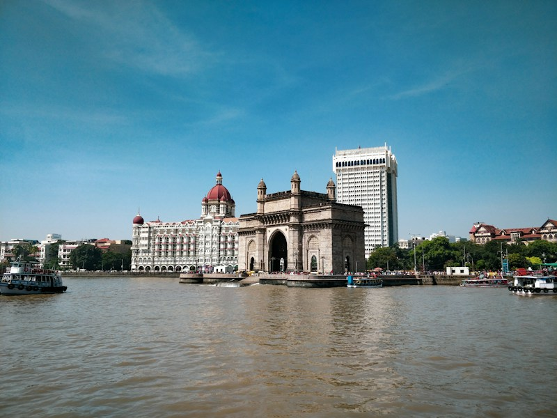

The Taj Mahal is a white marble monument beside the Yamuna River.

Jaipur is known for its historic architecture, forts and palaces.

The backwaters are waterways surrounded by green landscapes.

Goa offers beaches and coastal scenery along the Arabian Sea.

Mumbai is a busy coastal city known for its buildings and waterfront.
